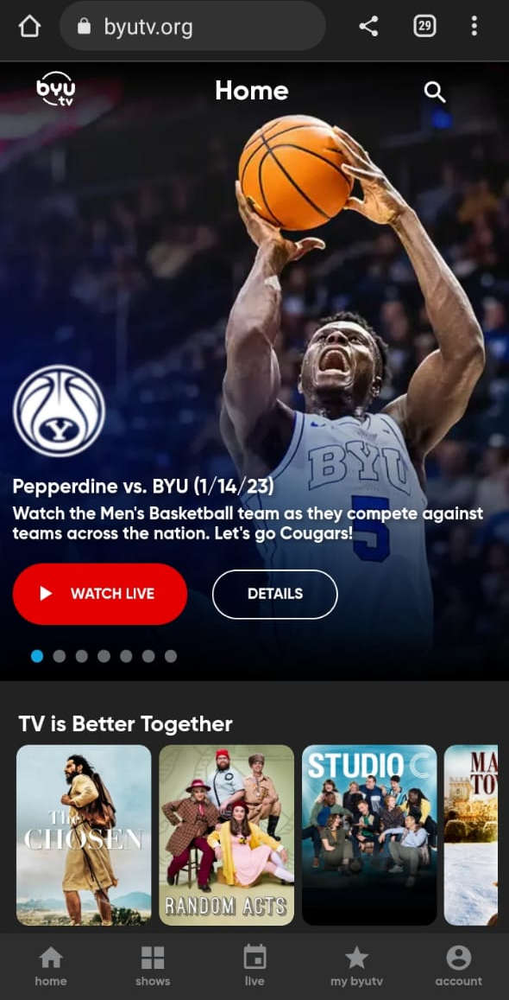

M. Ismayle da S. Ribeiro
Visual Hierarchy
BYU TV
Visual hierarchy refers to the arranging of components in ascending or descending order of importance. This is accomplished using proportion, color, images, contrast, typography, whitespace, texture, and style. In this example there's a larger carousel banner calling the attention for new programs and than smaller carousel with the others programs.
Contrast
The Church of Jesus Christ of Latter-day Saints
Contrast is designing a distinct difference between foreground and background colors in order to enhance readability. Contrast does not only deal with colors but also blends into visual hierarchy of font sizes, image placement, and content. In this example contrast is used to turn the page more readable.
Hick`s Law
Hick's Law, also known as the Hick-Hyman Law, states that the time it takes for a person to make a decision increases with the number and complexity of the choices they have. In the context of design, this means that the more options or elements a user has to choose from, the more time it will take for them to make a decision and complete a task. In this example we can se there's just a few option for the user in a clean page.